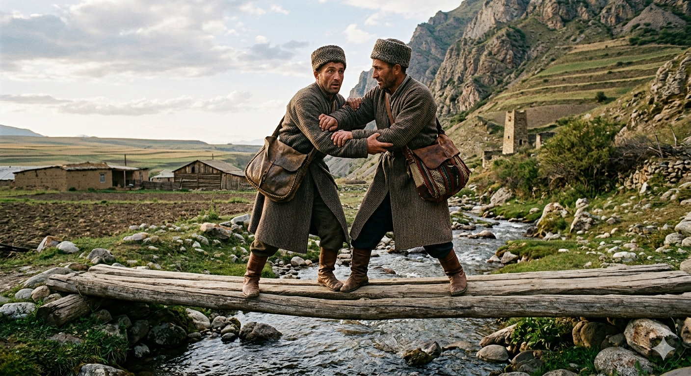

И.А. Дахкильгов. Хьехаме дувцарш - поучительные рассказы-притчи.
И.А. Дахкильгов. Хьехаме дувцарш - поучительные рассказы-притчи. Из ингушского фольклора.

Ши воша-лоамарой
Цхьан хана хала, миска вахаш хиннав ши лоамаро. Къел кӀордаяьй царна, арара нах аттагӀа бахаш ба, аьнна, хезад. Шоай талсаш ги а тайса, лоамара Ӏо ара волавеннав из ши воша. Болхаш, дӀакхаьчаб уж лоам чакх а банна, шаьрача аренга оттача. ӀодоагӀаш хий хиннад. Цох дехьа баьлча, лоамара арабалар белгало хиннад. Цхьа саг мара тӀехавоалургвоацаш готтига тӀий хиннад. Вежарех цаӀ цу тӀаь тӀа воаллашехьа, шоллагӀвар кхайкхав цунга: - Яь-яьй, водар! Ӏа сабарделахь. Цхьан дехьа довла деза вай! - ТӀий готтига да, шиъ цхьана воалалургац. - Из сона хац, тӀехьа довлаш, цхьана довла деза вай. Шоайла вӀаший хьерчаш, халла цхьана дехьабаьннаб уж. ПаргӀата баьннача гӀолла хаьттад: - Хьалхеи тӀехьеи цу тӀаьх вай ца далийтар фу бахьан дар хьа? - Из, даьсара, дар, - аьннад, - сол хьалха цу тӀаьх дехьа а ваьнна, юха а вийрза, сога "лоамаро" аьнна дӀакхайкха хьона эхь ца хетар бахьан долаш.
РУССКИЙ
Два брата-горца
Вконец обеднели двое братьев-горцев, взяли свои скудные пожитки, перекинули через плечи переметные сумы и начали спускаться с гор. Они решили поселиться на равнине. Подошли к ручейку, который как бы разделял горы и равнину. Через ручей был перекинут узенький мосток, рассчитанный на одного человека. Один из братьев двинулся к мостку, но тут второй окликнул его: - Стой! Не переходи первым. Мы вдвоем должны перейти этот мосток. - Это невозможно, ведь мосток очень узок. - Ничего, как нибудь да перейдем вместе. Сцепились они и бочком перешли ручей. Сели отдохнуть и тогда один спросил другого: - Почему мы не могли мост перейти по-одному? - Да потому, что ты, перейдя мосток первым, не постеснялся бы обернуться и обозвать меня словом "лоамаро" (горец), - был ответ.
ENGLISH
Two brothers from the mountains
Two mountain brothers had become utterly destitute; they gathered their meagre belongings, slung their knapsacks over their shoulders, and began to make their way down from the mountains. They decided to settle on the plain. They came to a little stream that seemed to mark the boundary between the mountains and the plain. A narrow footbridge, designed for just one person, spanned the stream. One of the brothers started towards the bridge, but just then the other called out to him: 'Stop! Don't go first. We must cross this bridge together.' 'That's impossible; the bridge is far too narrow.' 'Never mind, we'll manage to cross it together somehow.' They linked arms and crossed the stream side by side. They sat down to rest, and then one asked the other: 'Why couldn't we have crossed the bridge one at a time?' 'Because if you'd crossed first, you wouldn't have hesitated to turn round and call me "loamaro" (mountain man),' came the reply.
НОХЧИЙН
ПОГОВОРКИ
Айвенна лийнар кӀоаг чу кхийттав, теӀа лийнар лакхвеннав. Взлетевший вверх свалился в яму, вознесся тот, кто скромно жил. One who soared too high fell into a pit; one who lived modestly rose up. Лакха хьалаваьлларг к1ога чу воьжна, эхь долуш вахарг лакхавелла.Веший вонах а ваьннавац, веший диках а кхийнавац. Не уйти от дурных поступков брата, а до его хороших – не дотянуться. One cannot escape a brother's bad deeds, nor fully live up to his good ones. Вешин вонах а воьду ца ло, диках а кхаьчна ца ло.ГӀалат доацаш воша а короргвац. Без недостатков даже брата не бывает. There is no brother without faults. Г1алат боцу ваша хилла вац.Дукха курвувлар (сеттар…) наха тоӀӀавий ший гӀанда тӀа Ӏохоаву. Гордеца (кичливого…) люди быстро ставят на свое место. People quickly put an arrogant man back in his place. Дукха кура волчунна нах сихонца шен меттиг довзуьйту.Истара муӀа тӀа баьгӀача мозо яьхад: “Готара боагӀа со”. Сидя на роге возвращающегося с пахоты быка, муха гордилась: “Я еду с пахоты!”Ка яьлча кура а ма вала, ка ехача сагота а ма хила. Повезет – не возгордись, не повезет – не переживай. If luck comes, don't grow proud; if it doesn't, don't despair. Ка йелча, кура ма вала; ка яьлча, г1айг1ане а ма хила.Кура хила, сонта ма хила. Будь гордым, но не будь кичливым. Be proud, but do not be arrogant. Яхь долуш хила, сонта ма хила.Курачох оал: “Пехк йолча а дог доал цун”. Про гордеца говорят: “И там, где легкие, у него тоже сердце”. About the arrogant they say: "Even where the lungs are, he has a heart too." Курачух олу: «Пхагара меттиг чохь а дог болуш ву цо».Къечо мекхех думе лич хьийкхаб. Бедняк усы смазывал курдюком (чтобы посчитали его богатым). The poor man rubbed fat on his moustache so people would think he was wealthy. Къен стеган мекхаш мохал хьаькхна, бахьаьрч хеташ.Лоам Ӏаса даьча Ӏатта ара маша довргдац. Корова, отелившаяся в горах, будет хорошо доиться (пастись) на равнине. A cow that calved in the mountains will graze and give milk well on the plains too. Лам т1ехь аса бина Ӏатто аренахь а шура ло.“Со” аьннача хана дов сага ираз. Несчастным становится якающий гордец. One who always says "I" brings misfortune upon himself. «Со» олуш верг дов ду шена ирс.Хьа воша хулачул, хьа уст-воша хиннавалара со (аьннад воча вешийга). Чем быть твоим братом, лучше бы я стал твоим шурином (о плохом брате). "Better I had been your brother-in-law than your brother," one said to his own worthless brother. «Хьан ваша хилачул, хьан шун хиннавара со», - аьлла вон вешега.Шийга во деча, айвенна хила веза; нахага во деча, олллавенна хила веза. Постигли тебя неприятности - ходи гордо; постигли людей неприятности – ходи понуро. When misfortune befalls you, walk proudly; when it befalls others, walk humbly. Хьайна вон дели, айвелла хила веза; наха вон дели, 1олалуш хила веза.